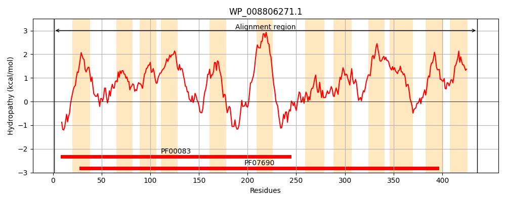
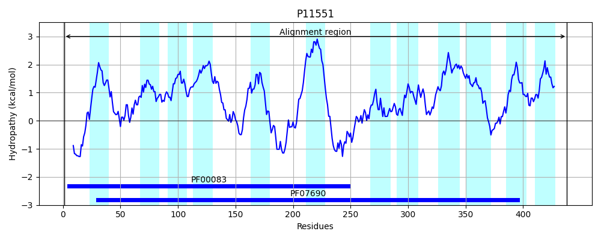

Hit Accession: P11551
Hit TCID: 2.A.1.7.1
Hit Description: gnl|BL_ORD_ID|9041 gnl|TC-DB|P11551|2.A.1.7.1 L-fucose permease - Escherichia coli.
Mach Len: 438
e:0.000000
Query TMS Count : 12
Hit TMS Count: 12
TMS-Overlap Score: 9.900000
Predicted Substrates:CHEBI:5584;hydron, CHEBI:2181;L-fucopyranose
BLAST Alignment:
Score: 2052 , Bit scores: 795 bits, E-value: 0.0e+00, Alignment length: 438, Percentage identity: 90
Query: 1 MGNTTIPTQSYRAME--SGQSKSYIIPFALLCSLFFLWAVANNLNDILLPQFQQAFTLTNFQAGLIQSAFYFGYFIIPIPAGMLMKKFSYKAGILTGLFLYACGAALFWPAAEVMNYTLFLIGLFIIAAGLGCLETAANPFVTVLGPESGGHFRLNLAQTFNSFGAIIAVVFGQSLILSNVPHQPQDVLDKMTPEQLSAWKHSLVLSVQTPYMIIVAIVLLVALLIVCTRFPSLQSDDHSDSAQSTFLASLTRLMRIRHWRWAVLAQFCYVGAQTACWSYLIRYAIEEIPGMTAGFAANYLTATMVCFFIGRFTGTWLIRRFAPHNVLAIYAFIAMLLCLLSAFSGGHVGLLALTLCSAFMSIQYPTIFSLGIKHLGQDTKYGSSFIVMTIIGGGIVTPVMGFVSDAAGNIPTAELVPALCFAIIFIFARFRSQAATN 436
MGNT+I TQSYRA++ +GQS+SYIIPFALLCSLFFLWAVANNLNDILLPQFQQAFTLTNFQAGLIQSAFYFGYFIIPIPAG+LMKK SYKAGI+TGLFLYA GAALFWPAAE+MNYTLFL+GLFIIAAGLGCLETAANPFVTVLGPES GHFRLNLAQTFNSFGAIIAVVFGQSLILSNVPHQ QDVLDKM+PEQLSA+KHSLVLSVQTPYMIIVAIVLLVALLI+ T+FP+LQSD+HSD+ Q +F ASL+RL RIRHWRWAVLAQFCYVGAQTACWSYLIRYA+EEIPGMTAGFAANYLT TMVCFFIGRFTGTWLI RFAPH VLA YA IAM LCL+SAF+GGHVGL+ALTLCSAFMSIQYPTIFSLGIK+LGQDTKYGSSFIVMTIIGGGIVTPVMGFVSDAAGNIPTAEL+PALCFA+IFIFARFRSQ ATN
Sbjct: 1 MGNTSIQTQSYRAVDKDAGQSRSYIIPFALLCSLFFLWAVANNLNDILLPQFQQAFTLTNFQAGLIQSAFYFGYFIIPIPAGILMKKLSYKAGIITGLFLYALGAALFWPAAEIMNYTLFLVGLFIIAAGLGCLETAANPFVTVLGPESSGHFRLNLAQTFNSFGAIIAVVFGQSLILSNVPHQSQDVLDKMSPEQLSAYKHSLVLSVQTPYMIIVAIVLLVALLIMLTKFPALQSDNHSDAKQGSFSASLSRLARIRHWRWAVLAQFCYVGAQTACWSYLIRYAVEEIPGMTAGFAANYLTGTMVCFFIGRFTGTWLISRFAPHKVLAAYALIAMALCLISAFAGGHVGLIALTLCSAFMSIQYPTIFSLGIKNLGQDTKYGSSFIVMTIIGGGIVTPVMGFVSDAAGNIPTAELIPALCFAVIFIFARFRSQTATN 438 | Protein Hydropathy Plots: |
|---|
|  |  |
Pairwise Alignment-Hydropathy Plot:
|
|---|
 |